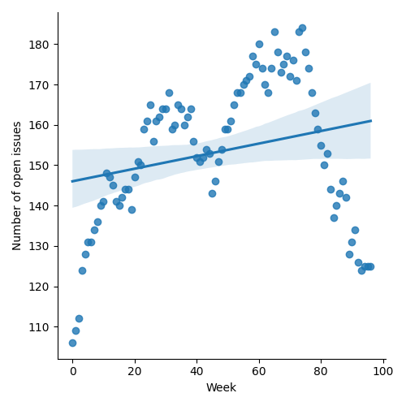
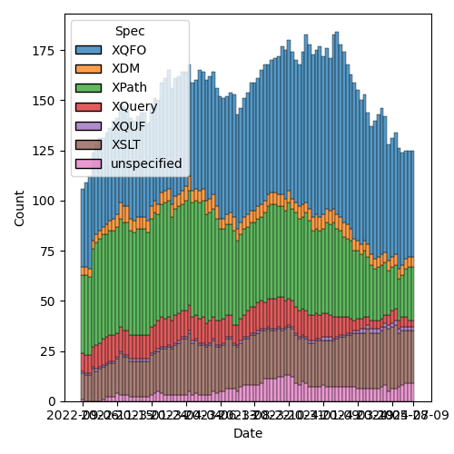
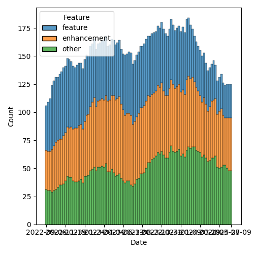

QT4 CG Meeting 085 Minutes 2024-07-09
Table of Contents
Meeting index / QT4CG.org / Dashboard / GH Issues / GH Pull Requests
Draft Minutes
Summary of new and continuing actions [0/3]
[ ]QT4CG-080-05: NW to add absolute property to the parse-uri output[ ]QT4CG-080-07: NW to update the build instructions in the README[ ]QT4CG-082-02: DN to work with MK to come to agreement on the fn:ranks proposal
1. Administrivia
1.1. Roll call [11/12]
Regrets: RD
[ ]Reece Dunn (RD)[X]Sasha Firsov (SF)[X]Christian Grün (CG)[X]Joel Kalvesmaki (JK)[X]Michael Kay (MK)[X]Juri Leino (JLO)[X]John Lumley (JWL)[X]Dimitre Novatchev (DN)[X]Wendell Piez (WP)[X]Ed Porter (EP)[X]C. M. Sperberg-McQueen (MSM)[X]Norm Tovey-Walsh (NW). Scribe. Chair.
1.2. Accept the agenda
Proposal: Accept the agenda.
Accepted.
1.2.1. Status so far…

Figure 1: “Burn down” chart on open issues

Figure 2: Open issues by specification

Figure 3: Open issues by type
1.3. Approve minutes of the previous meeting
Proposal: Accept the minutes of the previous meeting.
Accepted.
1.4. Next meeting
This next meeting is planned for 16 July.
Any regrets?
None heard.
1.5. Review of open action items [0/3]
[ ]QT4CG-080-05: NW to add absolute property to the parse-uri output[ ]QT4CG-080-07: NW to update the build instructions in the README[ ]QT4CG-082-02: DN to work with MK to come to agreement on the fn:ranks proposal
1.6. Review of open pull requests and issues
1.6.1. Blocked
1.6.2. Substantive PRs
The following substantive PRs were open when this agenda was prepared.
- PR #1313: 1311 Tokenizing after <
- PR #1306: 46 Add @as attribute to xsl:sequence
- PR #1296: 982 Rewrite of scan-left and scan-right
- PR #1283: 77b: Update expressions
- PR #1266: 1158 Add array mapping operator
- PR #1263: 1224 Add xsl:accumulator-rule/@priority attribute
- PR #1262: 1160 Add collation-available() function
- PR #1244: 566-partial Rewrite parse-uri
- PR #1228: – Adding the BLAKE3 hashing algorithm to fn:hash
- PR #1209: 1183 Add transient mode and the transient{} expression
- PR #1185: 1179 array:values, map:values → array:get, map:get
- PR #832: 77 Lookup returning path selection
2. Technical Agenda
2.1. PR #1313: 1311 Tokenizing after <
See PR #1313
MK introduces the issue. The substantive changes are in the grammar appendix.
- MK: Some of the rules need to be clarified as they depend on how you
interpreted some of the rules in 3.1
- … I’ve tried to describe carefully what a tokenizer should do.
- (MK walks through the various cases.)
- … A name character after a “<“ is a bit tricky.
- … This is done without appeal to the context.
- … There’s a note about compatibility and the infamous
10 div-3example. - … The longest token rule has previously required you to know the context; we’ve abandoned that.
- NW: I’ve checked the diff and it looks clean despite the weirdness in the diff version.
- JWL: Is it worth noting that these rules don’t apply to the full-width “<“ character?
- MK: Maybe, but we’d be in danger of repeating ourselves.
- JLO: Why can’t we enforce a space after the “<“?
- MK: Compatibility.
- JLO: But isn’t it also incompatible to require the space after
div? - MK: You’ve always been able to write
price<discountwithout a space (where they are both element names).- … The other problem would be that it would impose a constraint on XPath users that only applies to XQuery.
- DN: I think in the past I’ve observed that we have trouble because we have so
many operators. My reaction to this was the chain function which doesn’t
require any operator at all.
- … I think this problem is artificial. It’s artificially raised by the over-abundance of operators.
(Some discussion of the fact that the problem is associated with “<“ and not the abundance of operators.)
- MSM: I disagree with DN only in one respect, I think the problem was clear 20 years ago!
- … Every simplifaction is welcome to me. MK says you’ve always been able to
write
a<bwithout spaces in XPath whenaandbare element names. But you also said that not everyone parses the same way. Do we have emperical evidence that everyone does that bit correctly?
- … Every simplifaction is welcome to me. MK says you’ve always been able to
write
- MK: The
div-3issue is certainly a very problematic case that we’ve know about for years. And the spec is notoriously vague on that one. There’s never been any rule in XPath that you need spaces around a “<“ sign and I think it’s unlikely that any implementation has imposed that rule. If they do, they’re pretty clearly wrong.
Proposal: accept this PR.
Accepted.
2.2. PR #1266: 1158 Add array mapping operator
See PR #1266
- MK: This introduces another bit of syntactic magic, but it’s justified by the
fact that the sequence mapping operator has proved very popular. This makes it
possible to do with arrays what you can do with sequences.
- … The
!!operator is introduced to map arrays.
- … The
- DN: Continuing what I said previously: not only is this difficult to write and
understand, it’s very error prone. Suppose I write “!” when I wanted “!!” or
vice-versa. The possibility of making mistakes makes this unacceptable.
- … Maybe I’d expect “!!!” and “!!!!” in the future!
- MK: Yes, I fully accept that the argument that we’re adding too many rather cryptic operators. At the same time, on balance I think it’s better to have this one than not have it.
- CG: What I can report from our users is that there are two groups of people: some like a concise syntax and welcome new operators of that kind. And others are already lost from other extensions. You can always say “don’t use it if you don’t like it.” But I think we’ve already agreed to address expert users with new constructs.
- JWL: Just to clarify, if the left hand part was a sequence of arrays, would I use “!” and then “!!”?
- MK: I restricted the left hand side to be an empty sequence or a single array.
- JWL: Yes, but you could map over a sequence of arrays with a double mapping.
- MK: Yes, and at that point you’re probably better of with FLOWR expressions.
- JK: Could this also be applied and leveraged for maps? If we consider an array just a map with numeric keys, you could apply this to the values of a map.
- MK: Worth exploring, but I thought that would be too complicated and not really needed.
- MSM: Thank you, CG, for putting it the way he did. He’s made me think it in a slightly different way. When I used to teach XPath to beginners, I always told users not to use the abbreviated syntax until it was boring. I feel much the same way about FLOWR expressions. That leads me to a concrete suggestion: you could do this with a FLOWR expression and I think it would be useful if the introduction of the operator gave an equivalent FLOWR expression.
- MK: Yes, you can define how you’d solve the problem with a FLOWR expression, but you can show an equivalent expression because we don’t have a way to bind the context value.
- MSM: Give an example and maybe point out the crucial difference.
- JLO: I learned from a previous comment that if there’s a sequence of arrays
you’d really need to do
! . !!? - MK: I think if you had a sequence of arrays, a compound FLOWR expression would be better.
- JLO: We have “/”, “//”, and “?” and “??”, and… In that regard it would make sense to me if a sequence of arrays would be mapped with “!!”. Would that make sense?
- MK: It could be done that way. On the whole we’ve gone against operators that do implicit mapping over sequences. I’ve tried to keep it simple for the moment.
- CG: It’s really difficult to find other operators/characters that are more intuitive. I wouldn’t have guessed that “!!” had anything to do with arrays.
- MK: Yes. Choosing punctuation symbols is always a little arbitrary. Sometimes they have mnemonic value and sometimes they don’t.
- CG: We don’t have any other use of “!” with arrays.
- MK: I think the mnemonic is that it’s an extension of the “!” operator.
- JWL: I think JLO’s idea has some merit. It would allow the left hand side to be an empty sequence.
- MK: That’s already allowed. I decided to handle that case but not multiple arrays.
- WP: I’m not sure I have all the context. There’s a two level problem, we want to solve the problem but at a lower level we have the observations that DN has made. Documenting it as MSM suggests seems like a good idea. I’d be more comfortable with DN’s comments if we knew what the boundaries are. I like the feature, but I see the issues DN is raising.
- MK: It’s a classic feature creep problem. It’s always possible to add “one more feature” and then you discover you’ve added 500.
- WP: This is a feature requested by users?
- MK: It fulfills an obvious gap.
- WP: It’s accounting for completeness. That’s a balancing factor against simplicity.
- MK: There’s an orthogonality argument: if a feature exists for sequences, it should exist for arrays.
- DN: Several things. I think that for many of our creations, we need to
remember “KISS”: keep it simple stupid. The fact that we’re out of special
characters and we need repetitions, should ring a bell to tell us to stop
creating new operators! I think CG said expert user like this notation, but
I’m not sure I’m convinced. I don’t consider myself a novice user, but I don’t
like it. When I write new courses for XPath 4.0, I will definitely tell users
to avoid these operators and especially long chains of them.
- … I can’t over-emphasize my frustration with this issue.
- SF: One argument against the simplicity argument: languages tend to have at most 128 phonemes. That seems to be a limiting factor of human cogition. The idea that we should keep the operators simple flies in the face of the limitations of ASCII. This is a chaining operator and we need to keep the semantics understandable.
- DN: Regarding what SF said, I largely agree. But also, we’re not linguists, from a historical perspective: what were the operators. Very few gestures were preserved, most things were replaced by meaningful words.
- SF: If we’re concerned about multiple characters. We could use Unicode. I’d be in favor of a dual approach were we have single Unicode characters and ASCII representation.
- JLO: I like the idea of this mapping, but I’d really like to see it made to traverse over lists. Extending ! and !! along the lines of / or //. I never heard anyone say it wouldn’t be possible.
- NW: We have one person strongly opposed and when I asked for support, I got a luke-warm response at best.
NW: I don’t believe we have consensus to add this.
2.3. PR #1262: 1160 Add collation-available() function
See PR #1262
- MK: Not much has changed. You can now specify multiple usages, and it must be available for all the usages.
Proposal: accept this PR.
Accepted.
2.4. PR #1306: 46 Add @as attribute to xsl:sequence
See PR #1306
- MK: The previous version added an
xsl:iteminstruction. That was controversial, so this removes thexsl:iteminstruciton. That will return in another PR. - JWL: Last time there was also a notion of putting
ason any instruction. That doesn’t make sense everywhere.
Proposal: accept this PR.
Accepted.
2.5. PR #1296: 982 Rewrite of scan-left and scan-right
See PR #1296
Are we ready for this? Let’s give it a try…
- MK: We’ve reviewed this before and gone back and forth a bit.
- … We had an example in our own spec where we used position arguments.
- … We left fold-left and fold-right the same, what’s changed is the way it’s described.
- … The arity-2 call back is fairly straightforward
- … The description of the arity-3 call back is much simpler.
- … We do roughly the same thing for fold-left and fold-right
- MK: The description of scan-left and scan-right uses the same mechanism. That improves the exposition.
- DN: I see here at least two problems. Folds as they were originally defined
never had any positional arguments for the action function. This is because
aggregation as a whole doesn’t depend on position. None of the common uses for
folds have any use for position. I did a lot of research and only found one
use of a positional argument in a JavaScript implementation and it was a
contrived example.
- … Now we have another contrived example in our own specification.
- … Using the rule that allows a function to be passed with too many arguments totally destroys type safety.
- DN: A position argument shouldn’t be used and the rule that you can pass extra arguments destroys type safety. I don’t believe this use of a position will ever be used more times than I have fingers!
- DN: We should reconsider positional arguments and this rule about passing
additional arguments that are ignored.
- … The proposed solution is to specify a new function if you want a positional argument!
- DN: Initially the specification was executable, but now it’s replaced by code that isn’t executable. We have examples in our specification of code with errors.
- JWL: I noticed the for-each function; is there an argument for symmetry there.
- MK: I think it already has one! That’s part of the motivation for this.
- CG: I can report that users are already thankful that we added position to for-each. I think it’s a good idea because so many people know it from JavaScript. It’s always interesting to know what position your at in a sequence. It’s pointless to say that for folds positions don’t make sense.
- JLO: Since it was questioned why one would need a positional argument in a fold, I’d like to see windowed flower statmenets expressed in a functional way and I think this is part of the way.
- MK: I think some persuasive use cases would help.
- DN: I wanted to remind everyone that blinding following uniformity is bad.
We’ve run out of time and this has been a somewhat contentious issue. Let’s try to carry on the discussion in email and come back to this next week.
3. Any other business
None heard.